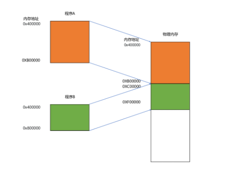

计算机组成原理
1. 入门篇
1. 计算机的组成
任何一台计算机都是由： 运算器、控制器、存储器，输入输出设备组成。 如下图：
2. 衡量计算机的性能
- 响应时间：执行一个程序要花多长时间
- 吞吐率： 指的是一定时间范围我们能做多少事。
- 性能 = 1/响应时间 | 程序的响应时间=cpu时钟周期数* 时钟周期时间 | 时钟周期时间(cpu执行一条指令的时间) = 1/cpu主频。| cpu时钟周期数 = 指令数 x 每条指令的平均时钟周期数 。
- 如何优化响应时间：提高主频， 编译器优化减少指令数，cpu流水线减少一条指令的时钟周期。
- 如何提高吞吐率：多核， 提升制程（也就是缩小晶体管的体积进而在单位面积上增加晶体管的数量）。提高主频和提升制程都容易造成cpu功耗太高。
- 其他优化方法：
- 加速大概率事件， 例如机器学习使用gpu进行优化
- 通过流水线提高性能
- 通过预测提高性能，例如 分支和冒险，局部性原理
2. 指令和运算
1. 指令
- 程序如何变成计算机指令： 高级语言-汇编语言-机器码
- 汇编指令和机器码是一一对应的。不同的指令集也就是不同的汇编码和不同的机器码。
- 指令就是一个数，位数一般和cpu的位数相同。比如32位机器的指令一般也是32位。下图是32位MIPS指令，
- 指令的分类：
- 算术类指令
- 数据传送类指令
- 逻辑类指令
- 条件分支类指令
- 无条件跳转类指令
- 计算机的寄存器类型：
- pc 寄存器：存储下一条将要执行的指令
- 指令寄存器：存储当前正在执行的指令
- 条件码寄存器：一些标志位，用来存储是否有进位，是否溢出，零标志条件吗（bool运算的标志）
- 数据寄存器和地址寄存器。就是分别用来存储数据和地址的寄存器，其中既能存储地址也能存储数据的寄存器叫做通用寄存器。
- if/else 编译成机器指令为cmp jne和 jmp 其中jmp是向后跳转。具体如下：
``` {style=”line-height: 160%; box-sizing: content-box; border: 0; border-radius: 0; margin: 2px 0 8px; background-color: #f5f7f8;”} if (r == 0) 3b: 83 7d fc 00 cmp DWORD PTR [rbp-0x4],0x0 3f: 75 09 jne 4a <main+0x4a // r==0 被编译成了 cmp和jne两条指令，cmp 比较r==0 去置位条件码寄存器的零标志位， jne 通过读取标志位决定 跳转还是不跳转。 { a = 1; 41: c7 45 f8 01 00 00 00 mov DWORD PTR [rbp-0x8],0x1 48: eb 07 jmp 51 <main+0x51 } else { a = 2; 4a: c7 45 f8 02 00 00 00 mov DWORD PTR [rbp-0x8],0x2 51: b8 00 00 00 00 mov eax,0x0 }
7.while/for 编译成机器指令是jmp cmp和jle 其中jle向前跳转的。
``` {style="line-height: 160%; box-sizing: content-box; border: 0; border-radius: 0; margin: 2px 0 8px; background-color: #f5f7f8;"}
for (int i = 0; i <= 2; i++)
b: c7 45 f8 00 00 00 00 mov DWORD PTR [rbp-0x4],0x0
12: eb 0a jmp 1e //mov i=0 并直接跳转到cmp 指令。
{
a += i;
14: 8b 45 f8 mov eax,DWORD PTR [rbp-0x4]
17: 01 45 fc add DWORD PTR [rbp-0x8],eax
1a: 83 45 f8 01 add DWORD PTR [rbp-0x4],0x1
1e: 83 7d f8 02 cmp DWORD PTR [rbp-0x4],0x2
22: 7e f0 jle 14 // 跳回上边位置
24: b8 00 00 00 00 mov eax,0x0
}
- 函数编译成指令如何执行
``` {style=”line-height: 160%; box-sizing: content-box; border: 0; border-radius: 0; margin: 2px 0 8px; background-color: #f5f7f8;”} int static add(int a, int b) { 0: 55 push rbp // 基址指针寄存器 指向当前栈的底部 1: 48 89 e5 mov rbp,rsp // rsp 栈指针寄存器，指向当前栈顶 4: 89 7d fc mov DWORD PTR [rbp-0x4],edi 7: 89 75 f8 mov DWORD PTR [rbp-0x8],esi return a+b; a: 8b 55 fc mov edx,DWORD PTR [rbp-0x4] d: 8b 45 f8 mov eax,DWORD PTR [rbp-0x8] 10: 01 d0 add eax,edx } 12: 5d pop rbp 13: c3 ret
0000000000000014 <main: int main() { 14: 55 push rbp 15: 48 89 e5 mov rbp,rsp 18: 48 83 ec 10 sub rsp,0x10 int x = 5; 1c: c7 45 fc 05 00 00 00 mov DWORD PTR [rbp-0x4],0x5 int y = 10; 23: c7 45 f8 0a 00 00 00 mov DWORD PTR [rbp-0x8],0xa int u = add(x, y); 2a: 8b 55 f8 mov edx,DWORD PTR [rbp-0x8] 2d: 8b 45 fc mov eax,DWORD PTR [rbp-0x4] 30: 89 d6 mov esi,edx 32: 89 c7 mov edi,eax // 以上指令为参数赋值 34: e8 c7 ff ff ff call 0 <add // 函数调用被翻译成了call 指令，其中call指令能跳转到add函数地址，并将返回地址压栈 39: 89 45 f4 mov DWORD PTR [rbp-0xc],eax 3c: b8 00 00 00 00 mov eax,0x0 } 41: c9 leave
42: c3 ret // 弹出call指令压入的返回地址，然后跳回到该地址
如果函数中没有调用其他函数的话，编译器可以通过函数内联进行性能优化。 函数如果调用层次太深可能出现栈溢出问题 ```
2. 程序如何执行
- 高级语言-汇编码-机器码 - 执行 这个过程由两个部分组成
- 第一部分： 编译，汇编，链接 生成可执行文件
- 第二部分：装载器（loader) 把可执行文件装载到内存,变成数据和指令，cpu从内存中读取指令和数据真正开始执行。
- linux下的可执行文件是ELF格式。ELF格式由以下几个部分组成:
- .text Section （代码段）：用来保存程序的代码和指令
- .data Section（数据段）：用来保存程序里设置好的初始化数据信息
- .rel.text Section（重定位表）：保留了当前文件中我们在链接之前不知道的一些跳转地址，比如库函数printf
- .symbol Section（符号表）：保留了当前文件里定义的函数及全局变量名称机和他们对应的虚拟内存地址
- 链接器的作用是扫描所有的目标文件，将所有符号表里的信息收集起来，构成一个全局的符号表，然后在根据重定位表，将之前不知道的函数挑战地址等修正为正确的内存地址。最后将所有目标文件的对应数据段，代码段进行一次合并，变成了最终的可执行代码。
- 装载器的的加载要求
- 可执行文件占用的内存应该是连续的
- 加载器需要同时加载很多个程序，并且不能让程序自己规定在内存总加载的位置。解决这两个问题的方法就是内存映射（可执行文件中的地址都是虚拟地址，装载器在加载可执行文件的时候将虚拟地址映射成物理地址）
- 内存映射的方法
- 内存分段 
说明：
装载器为每个程序寻找一块连续的内存空间，然后做好内存映射。优点就是解决了同时加载多个程序并不会造成内存地址冲突。缺点是
内存碎片
如图：
两个剩余的128M空间是无法利用的。解决办法就是内存交换
可以先将Python程序交换到硬盘，在重新加载进来但不是原来的位置。但是也有性能瓶颈每次交换都是整个程序交换，太耗时。
- 内存分页
1. 背景：分页就是为了优化内存分段的问题，碎片化及发生交换时比较耗时
2. 原理：和分段把一大段连续的空间分配给整个程序相比，分页时将物理内存分成固定大小的页，linux中一页为4K
3. 优点：装载器在装载程序时不用把全部的程序装载到内存，装载器可以做好内存映射后，并不把页加载到物理内存，而是在程序运行过程中，需要用到内存页里的数据和指令时，再通过触发cpu的缺页异常将页加载到内存。这样减少了内存碎片化同时再内存换出的时候可以减少换出的内存大小从而减少换出耗时。
- 链接可以分为动态链接和静态链接
- 静态链接： 就是将不同的目标文件链接到同一个目标文件。缺点：当多个程序共享一个库时，在链接的时候相当于每个程序都将共享库文件的内容合并到了当前文件。比较浪费内存空间。
- 动态链接：动态链接的内容并不是目标文件，而是已经加载到内存的共享库。linux下为.so文件，windows下为.dll文件。如图：
说明：
- 共享库中的指令代码必须是指令无关的，也就是不管加载到内存的那个位置都能运行。
- 虽然共享库用的都是同一段物理地址，但是在链接到每个程序中的虚拟地址不同
- 动态库中的函数和变量都使用相对与加载位置的相对对地址
- 实现动态链接：
动态库链接生成的ELF执行文件和静态链接的符号表和重定向表相似，对应的有plt表和GOT表，plt表里存了对应的函数名、全局变量名及在Got表中的位置，GOT表保存了具体的函数地址。GOT表存在于共享库的.data
section，每个调用共享库的程序都加载一份Got表。当需要使用共享库的函数时再从GOT表中查询对应的函数地址。
我们的 GOT 表位于共享库自己的数据段里。GOT
表在内存里和对应的代码段位置之间的偏移量时钟是确定的
GOT
表里的数据，则是在我们加载一个个共享库的时候写进去的。类似于动态绑定。
3. 计算机中数字，字符，浮点数的二进制形式
- 数字的二进制表示
- 原码：将最高位作为符号位，其他数字为代表数值本身，0表示整数，1表示负数
- 反码：如果是正数则和原码相同，如果是负数则保留符号位，其他位按位取反
- 补码：如果是正数表示方法和原码一样，如果是负数则将数字的反码+1就是补码。负数使用补码的好处就是整数相加不需要任何的特殊处理，只是把他当成普通的二进制相加就能得到正确的结果。
- 字符的表示： 英文字符用ascii码，8位代表一个字符。其他语言比如中文一般用utf-8编码。
字符集和字符便码： unicode
是一个字符集，这个字符集收录了150万种语言，utf-8, utf-16
及gb2312是对unicode中的字符进行的一种编码方式
- 浮点数的二进制表示:
- 定点数：32位数，用4个比特来表示0-9，则32位可以表示8个这样的数，我们用最左边的6个表示整数部分，最右边的两个数表示小数部分，这样的表示方式就是bcd便码，也就是定点数。小数点固定。缺点就是表示的数值范围不大，小数位数也不多。一般用在超市，银行等小数位数少的地方，这样的编码较为直观清晰
- 浮点数：在计算机中用科学表示法来表示浮点数，也就是iEEE标准
说明：指数位8位数 表示-127到+126的范围。
要表示0和一些特殊数，如图：

浮点数这样的表示也就决定了，浮点数只是近似值没有办法精确表示一个数，因此0.3+0.6
!= 0.9
问题：
十进制数如何转换为二进制浮点数：整数部分直接转成二进制数，小数部分循环乘以2
浮点数如何相加：先对齐再计算，先对齐指的是小数点对齐。1.2
+12.3
浮点数相加的精度损失是什么：
浮点数相加如何解决精度损失
3.处理器
1. 指令周期、cpu周期或机器周期、时钟周期
- 时钟周期：cpu的最小时间间隔，主频的倒数
- 机器周期：从内存里面读一条指令的最短时间
- 指令周期： 执行一条指令通常需要取指，译码，执行，访存，回写等步骤，执行每个步骤通常需要一个时钟周期。这些时钟周期就组成了一个指令周期
2. cpu所需要的硬件电路
说明：自动计数器就是pc寄存器
3. CPU 并发设计
1. 流水线
- 为什么需要流水线
相较于单指令周期的cpu，一条一条顺序执行，流水线的设计在同一个时钟周期内运行多条指令的多个阶段。提高了cpu的吞吐
- 流水线的原理

说明:
首先一条指令拆分成多个步骤，如上图，为五级流水线，同一个时钟周期可以运行不同指令的不同阶段。
- 流水线的缺陷
1. 流水线不是越多越好，每增加一级就多一级写到流水线寄存器的操作，就会增加一条指令的处理时间。同时也增加了功耗和散热的设备，因为增加了电路。
2. 流水线技术并不能缩短单条指令的响应时间，但是可以增加在运行很多条指令时候的吞吐
3. 必须解决好冒险的依赖关系
2. 如何解决流水线冒险
- 冒险的分类
1. 结构冒险：
cpu在同一个时钟周期，同时运行两条计算指令的不同阶段，但是这两个阶段可能用到同一个硬件电路

解决方案：增加硬件资源，比如对于访问内存数据和指令的冲突，就是将cpu缓存分成指令缓存和数据缓存。也就是缓存采用哈佛结构

2. 数据冒险：同时**执行**的多个指令之间有数据依赖的情况。对应三种情况，先写后读，先读后写，写完在写。
解决方案:
- 流水线停顿：
如果发现后边执行的指令会对前边执行的指令有数据层面的依赖，就在等等。缺点是插入过多的NOP操作，造成了性能下降

- 操作数前推：如果下一条指令依赖上一条指令的结果，上一条指令在ALU执行完成后可以将结果直接发送给下一条指令执行。而不必等上一条指令写回到寄存器。再去取。
- 乱序执行：将没有依赖的指令发给不同的ALU功能单元同时执行。

说明:
上图RS功能就是指令分类，分发执行。重排缓存区会按照cpu取指令的顺序对指令结果重新排序。
3. 控制冒险：if/else等控制语句，只有执行后才知道下一条指令去哪取。这中间的等待延迟就是控制冒险。
解决方案：
- 缩短分支延迟：在指令译码阶段提供条件判断与地址跳转的电路，使得等待时间变短。
- 分支预测
静态预测：就是假装分支不发生，也就是说只猜不跳转的情况，猜对的概率在50%
动态分支预测：一级分支预测，就是用1比特来记录当前分支的情况，根据当前分支情况预测下一次分支情况。二级分支预测就是用2个比特记录当前和上一次的分支情况。根据上两次的分支结果预测下一次分支情况。
2. 超标量
通过增加硬件的方式，在取指，译码阶段也实现并行的处理方式。可以一次性从内存里面取出多条指令。然后发送给多个并行的指令译码器，最后交给不同功能的ALU去执行。使的ipc大于1，
3. 超线程和SIMD
- 超线程 超线程的目的就是让一个线程A的指令在流水线停顿的时候，去执行线程B的指令，这也是两套指令寄存器，pc寄存器，条件吗寄存器存在的意义。
- SIMD（单指令多数据流） SIMD指令在获取数据和执行指令时都能并行，它是通过增加硬件的方式，一次性读取多个数据，并行执行。适用于大数据量数据并行的应用，比如向量运算，矩阵运算等。
2. 异常
- 中断、陷进、故障、中止统称为异常
- 中断向量一般是有操作系统分配的，而异常是cpu预先分配的。
- 中断是指来自于cpu外部的的信号，打断当前程序的执行.一般是i/o设备信号
- 陷进是指程序员故意主动触发的异常。比如系统调用
- 故障是指程序运行过程中出现了错误，比如加法溢出。故障和中断及陷进的区别是故障在异常程序处理完成后任然回到当前指令，而不是去执行下一条指令。
- 中止是故障的一种，指不可恢复的故障
### 3 处理器的其他架构
- 指令集的分类: CISC(复杂指令) 、 RISC(精简指令）
- FPGA和ASIC
FPGA: 现场可编程门阵列，这块芯片上有密密麻麻的门电路，可以通过编程控制这些门电路实现各种各样的硬件。 ASIC：为了专门用途而设计的一种芯片，比如tpu，GPU等
- GPU: 专门为处理图形渲染而设计的一种处理器，现在也大量用作机器学习的训练
- TPU: 专为深度学习的推断过程的计算而设计的一种处理器。
4.存储与I/O系统
1. 存储
全景层次
各存储器的性能差异
局部性原理：
1. 时间局部性原理：如果一个数据被访问了，那么它在短时间之内还会被再次访问
2. 空间局部性原理：如果一个数据被访问了，那么和它相邻的数据也很快会被访问。
高速缓存
1. 每个cpu 都有一个L1缓存和L2缓存，L3是多个cpu共享的，
L1分为指令L1和数据L1

2. cpu
从内存中读取数据到缓存是一块一块的来读取数据的，通常一个块的大小是64字节
3. cpu 无论数据在cache中存在与否，总是先读取cache
4. CPU 读取缓存数据的时候是一个字一个字读取的。
5. 内存数据加载到cache的映射机制：
- cpu发出的内存地址 = 组标记 + 索引 + Offset
- cache 中的block由 索引 + 有效位 + 组标记 + 数据

6. cpu读取内存数据的步骤：
- 根据内存地位，计算索引值
- 根据索引值定位到缓存块， 判断该缓存块有效。
- 对比内存高位的组标记和cache的组标记，确认cache中的数据是我们要访问的内存数据
- 根据内存地址的Offset位，从cache中对应的data
block中获取对应的字
- 如果在2，3步骤中，cpu发现数据不是要访问的，那cpu就会访问内存，并把对应的block
data 更新到cache中。同时更新对应的有效位和组标记的数据。
7. volatile：
确保我们对变量的读取和写入都一定会同步到主存里，而不经过cache
8. 高速缓存的写策略：
- 写直达：每次数据写都写到主存里
- 写回：每次写入都写到cpu
cache里。具体逻辑是：更新cache时如果cache中对应block是要更新的内存地址的数据则直接更新并标记为脏，如果不是则检测是否为脏，为脏则同步旧数据到内存，再将新数据更新到cache并标记为脏。
cpu从内存中加载数据到cache时，如果发现为脏先同步再加载。
9. MESI 保证解决多核cpu的缓存一致性
缓存一致性必须满足的条件：写传播，事务串行化(对数据更改的顺序不变)。
总线嗅探机制：这个机制可以实现写传播，即每一个cpu对缓存数据的更改都通过总线传播给其他cpu，其他CPU只需要监听总线做出反应就可以了。
实现缓存一致的策略：
- 写失效：同一时间只能有一个cpu写，写完后广播一个"失效"请求，其他cpu将缓存置为失效。
- 写广播： 一个cpu的写入，广播给其它cpu, 让其他cpu也去更新
MESI(写失效机制)协议
1. M E S I 分别代表cache line的四种状态， M
已修改，E：独占(当前数据只有当前cpu有) S:
共享（所有cpu都有一份数据） I：代表失效。
2. cache line在
E和S状态时，代表数据是干净的也就是说主存一致的。
3. 共享状态下不能直接修改数据，需要通过广播失效信号，让其他cpu将他们缓存中的数据置位无效后才能更改。
4. MESI状态流转图如下

虚拟内存：
- 页表： 存储虚拟页号和物理页号映射的表
- 最基本的虚拟地址转换为物理地址的步骤：
- 虚拟地址切分为页号和偏移量。32为系统高20位为页号，低12位为偏移量
- 从页表，查询出对应的物理页号
- 直接拿物理页号+偏移量得出物理地址。
- 多级页表
- 目的：
为了解决一级页表占用空间过大的问题。因为每个进程都有一张页表，32位系统每张一级页表4MB
- 原理：

通常多级页表是一个n叉的结构，4级页表存储多条3级页表，3级页表有存储多条2级页表，一次类推。但多级页表充分利用了内存的连续性。从而减少了很多2级，3级页表的存储。也就减少了空间的占用。
TLB
1. TLB
也是一块高速缓存，每个cpu都有一块这个芯片，也分为指令TLB和数据TLB.
也可以分成L1TLB和L2TLB
2. TLB
的作用是缓存虚拟地址到物理地址的转换结果(页表结果)，用来加速页表查询
3. 内存转换是有mmu这样的硬件来执行的,和TLB的交互都是由mmu来控制

安全与内存保护
1. 可执行空间保护：内存中除指令外，其他都不给与可执行权限，防止sql注入等漏洞
2. 地址空间布局随机化：将固定的内存布局改为随机的。思想类似于密码加盐.
 ### 2. I/O #### 总线
- 总线介绍： cpu里的内存接口，直接和系统总线通信，然后系统总线在接入一个i/o桥接器，这个桥接器一遍接入内存总线，一遍接入I/O总线

- 总线的分类：数据总线，控制总线，地址总线
- 总线裁决：解决多个设备共用总线的机制
输入输出设备
组成：接口和实际设备。 接口：cpu通过总线实际和接口相连。也就是说cpu通过硬件接口控制设备。接口包含三类寄存器：状态寄存器，命令寄存器，数据寄存器，数据缓冲区，和一个设备控制电路 cpu是如何控制I/O设备的:
1. CPU向I/O设备写入需要传输的数据。
2. cpu发送一个命令到接口的命令寄存器。控制电路会根据命令控制设备做出相应的操作。
3. cpu 从状态寄存器中感知当前设备所处的状态。、
cpu如何I/O设备通信：
1. 内存映射I/O(MMIO):
内存和I/O设备共用cpu的地址总线，因此访问内存的指令就就可以访问I/O。I/O设备只需要监听地址线获取自己需要的数据就好。
2. 端口映射I/O(PMIO):
设备和内存不共享CPU的地址总线，而是有各自的地址空间也叫端口(抽象概念),这种方式一般cpu会提供专用的通信指令比如
in/out #### 机械硬盘 1. 机械硬盘的组成：盘面、磁头、悬臂 2. 硬盘的转数：每分钟旋转的圈数 3. 通常一个盘面有两个磁头，分别在正反两面 4. 硬盘随机访问的时间 = 平均延时（旋转盘面到指定扇区的时间）+
平均寻道时间（悬臂移动到特定磁道的扇区的时间一般4-10ms） 5. 硬盘的IOPS(每秒随机访问次数)= 1s/硬盘随机访问时间。 6. 根据场景提高性能
- 原理就是缩短上边的随机访问时间，也就是缩短平均延时和平均寻道时间。
- 缩短平均寻到的方法一般是缩短定位磁道的行程，比如我们只用最外面的1/4或1/2磁道。
这样虽然缩短了定位磁道的行程，同时也减小了硬盘的容量。
SSD固态硬盘。
- 基本组成：一个电容加一个电压计组合在一起，记录一个或多个比特。
- ssd分类：
- SLC:
一个电容加电压计的基本组合单元只能记录一个比特，这种数据存储方式叫slc
- MLC: 一个电容能存储2个比特，TLC：一个电容里存储3个比特，QLC:
一个电容里存储4个比特。
- 硬件构成：从上到下分别为，接口电路，FTL(闪存转换层）实际的I/O设备(裸片、平面、BLOCK、Page)
- 写入：必须先擦除再写入，不能覆写. 写入和读取的基本单位是页。擦除的基本单位是块。
- SSD的使用寿命就是每个块的擦写次数。SLC的擦写次数一般是10万次，MLC的擦写次数大概是一万次，TLC和QLC也就是几千次。
- SSD必须进行磁盘整理，因为SSD擦除是按块擦除的，随着数据的删除和写入。某些块会形成数据空洞。这就必须有磁盘整理功能。将有效数据搬移，然后整块擦除，以备再写。
- 磨损均衡：
- 背景：
也就是说通过一定的机制让SSD将各个块的擦除次数，均匀的分摊到各个块上。FTL就是干这个的。
- FTL原理：类似于内存管理的页表，FTL存放了逻辑块地址到物理块地址的映射，操作系统通过逻辑地址访问硬盘，FTL将逻辑地址转换为对应的物理地址，同时FTL记录了每个块的擦写次数，当一个物理块擦写次数过多时，FTL可以更改逻辑地址映射到擦写次数少的物理块。对操作系统来说无感知。
- TRIM指令：为了解决操作系统和SSD逻辑层块状态不匹配的问题，因为操作系统删除文件只是删除了inode，SSD逻辑层无法感知。因此当进行垃圾回收时由于不知道数据已经被删除。还会存在数据搬移动作，即消耗了性能，又缩短了使用寿命。 写入放大 = 实际的闪存写入数据量/系统通过FTL写入的数据量。写入放大机理就是随着SSD存储空间被占用的越来愈多，每一次写入新的数据，都由于存储空间不足不得不搬移大量的数据，从而造成性能变差。 9、优化点：
- 尽量多读少写
- 尽可能写一个较大的数据快，这样就不容易出现磁盘碎片
- 持续的进行磁盘清理，确保有足够的空间进行写入。
- 只用SSD硬盘的一半空间，尽可能的降低写放大。
DMA
- 什么是DMA: DMA可以理解为一个协处理器，帮助cpu完成对应的数据传输工作。cpu发送控制信息，告诉DMAC 从哪里到哪里传输多长的数据。具体的数据传输由DMA完成。
- 总线上的设备类型：
1. 主设备： 只有主设备才能主动发起数据传输
2. 从设备： 从设备只能被动的接受数据传输
- DMAC即是主设备又是从设备
- kafka通过零拷贝的技术优化数据传输
硬件数据完整性
- 单比特反转
- 检测硬件数据反转的方法：采用有纠错检验的硬件，比如ECC内存。
- 检错码：奇偶校验，缺点是只能检测一位
- 纠错码：海明码